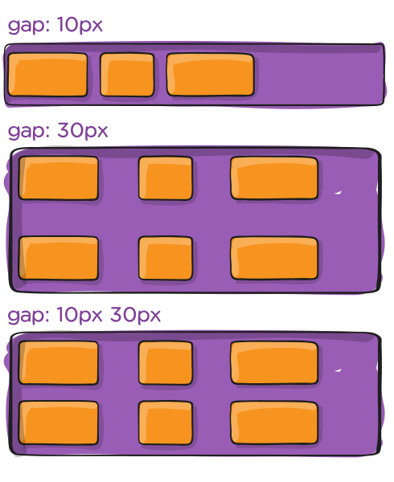

IDs e !important
No contexto dos CSS, nunca deveriamos usar o selector das IDs nem o comando !important. São duas ferramentas muito destruidoras, mas temos de saber o que fazem, principalmente porque aparecem muitas vezes em tutoriais e soluções de código online. (No contexto de JavaScript, as IDs podem e devem ser usadas).
<style type="text/css">
#site-brand {
color: red;
}
h1.nav-head.nav-main.other-useful-class {
color: green;
}
</style>
The Brand of my Website
Pseudoclasses
(lê-se sudoclasses)Às vezes, queremos mudar como os elementos aparecem baseado em certos eventos que acontecem no DOM. Uma dessas situações acontece quando queremos mudar a aparência de um elemento quando passamos com o rato por cima desse elemento.
<style>
.hover-example {
width: 100px;
height: 100px;
background-color: limegreen;
color: white;
}
.hover-example:hover {
background-color: crimson;
width: 150px;
height: 150px;
}
</style>
<div class="hover-example">Hover your mouse over me</div>
A parte do :hover seleciona o elemento, quando a condição é verdadeira.
É como um trigger para um evento. Conseguimos "captar" o momento que algo acontece e definimos algo para depois disso acontecer.
Outros exemplos: :first-child :last-child :nth-child(n) :first-letter
Os elementos :hover são muito utilizados para links e navegações.
Existem outros para as hyperligações como o :active e o :visited por exemplo
Podemos também usar os pseudoelementos ::before e o ::after para introduzir algo antes ou depois do elemento HTML
Atenção aos 2 :: antes. É usado para distinguir pseudoclasses de pseudoelementos. IE8 não suporta.
div::before {
content: "conteúdo antes";
}
div::after {
content: "conteúdo depois";
}
conteúdo antes
<!-- o conteúdo vem aqui -->
conteúdo depois
Há muitas outras pseudoclasses em CSS que podem ver neste artigo
Box Model
é o conceito mais dificil de aprender, mas nós já temos usado todas as funcionalidades do box model até aqui
Consistem em display, width, height, border, margin e paddings (e o seu conteúdo).
Por defeito no CSS, existem vários elementos por default (ex: a cor do texto ser sempre preta), e o display assume vários defaults. Nas divs temos o display:block, na span temos o display:inline por exemplo (e faz sentido consoante o que os elementos têm de fazer por default).
Flex
.flex-container {
display: flex;
}
Propriedades do pai Flex
Flex
.flex-container {
display: flex;
}
Define um container para o flex. Habilita o display flex para os seus filhos diretos
flex-direction
Estabelece o eixo principal e a sua direção.

.flex-container {
flex-direction: row | row-reverse | column | column-reverse;
}
flex-wrap
Por defeito, todos os flex items vão tentar ficar na mesma linha. Podemos mudar esse comportamento com o flex-wrap.

.flex-container {
flex-wrap: nowrap | wrap | wrap-reverse;
}
justify-content
Define o alinhamento sobre o eixo principal. Ajuda a distribuir espaço livre pelos elementos onde não é indicado uma dimensão.

.flex-container {
justify-content: flex-start | flex-end | center | space-between | space-around | space-evenly | start | end | left | right ... + safe | unsafe;
}
align-items
Define o alinhamento sobre o eixo secundário. Podemos pensar nele como um justify-content mas para o outro eixo - perpendicular ao eixo principal.

.flex-container {
align-items: stretch | flex-start | flex-end | center | baseline | first baseline | last baseline | start | end | self-start | self-end + ... safe | unsafe;
}
align-content
Define o alinhamento sobre as linhas dependendo do espaço disponível no eixo secundário.

.flex-container {
align-content: flex-start | flex-end | center | space-between | space-around | space-evenly | stretch | start | end | baseline | first baseline | last baseline + ... safe | unsafe;
}
gap, row-gap, column-gap
Controla o espaço entre items flex.

.flex-container {
display: flex;
...
gap: 10px;
gap: 10px 20px; /* row-gap column gap */
row-gap: 10px;
column-gap: 20px;
}
Propriedades dos filhos Flex
order
Define a ordem dos items.

.item {
order: 5; /* default is 0 */
}
flex-grow
Define se um item pode "aumentar" se for necessário

.item {
flex-grow: 4; /* default 0 */
}
flex-shrink
Define se um item pode "diminuir" se for necessário
.item {
flex-shrink: 3; /* default 1 */
}
Para mais informação detalhada do flex, consultar este artigo.
Vendor Prefixes
É uma maneira que os browsers usam para dar acesso aos developers a novas funcionalidades de CSS que ainda não são consideradas estáveis.
No entanto alguns developers também usam os vendor prefixes para adicionar regras de CSS especificas para alguns browsers (wrong!)
-webkit- (Chrome, Safari, iOS Safari / iOS WebView, Android)
-moz- (Firefox)
-ms- (Edge, Internet Explorer)
-o- (Opera, Opera Mini)
.myClass {
-webkit-transition: all 1s linear;
-moz-transition: all 1s linear;
-ms-transition: all 1s linear;
-o-transition: all 1s linear;
transition: all 1s linear;
}
.myClass {
transition: all 1s linear;
}
Podemos ver neste artigo os vendor prefixes ainda suportados hoje.
Animações e Transições
- Dar vida a elementos
- Dar a percepção que algo tem movimento
Movimentos em CSS
- Propriedade Transition
- Propriedade Animation + Keyframes
Sintaxe:
.elemento {
transition: [property] [duration] [effect] [delay];
}
Sintaxe:
.elemento {
transition: opacity 300ms ease-in-out 1s;
}
[effect]
- ease - transição que começa devagar, depois rápido e acaba devagar
- linear - velocidade igual no inicio e no fim
- ease-in - velocidade mais rápida no fim
- ease-out - velocidade mais rápida no início
- ease-in-out - começo e fim mais lento
- cubic-bezier(n,n,n,n) - podemos definir a velocidade desejada
Propriedades que podem ser animadas:
- Font-size:
- background-color:
- width:
- left:
- display
- font-family:
- position:
As propriedades melhores para animar
- posição
- scale:
- rotation:
- opacity:
Como podemos começar uma animação?
- Hover - pseudo class
- Mudanças de classes
Para além do CSS3
Existem libraries em JavaScript que nos auxiliam a disparar animações aos elementos
Sintaxe:
@keyframes [name] {
from {
[styles]
}
to {
[styles]
}
}
Sintaxe:
@keyframes [name] {
from {
height: 200px;
background: orange;
}
to {
height: 400px;
background: blue;
}
}
Sintaxe:
.element {
animation: [name] [duration] [timing-function] [delay] [iteration-count] [direction] [fill-mode] [play-state];
}
.element {
animation: timeline 2s ease-in-out 0s infinite normal forwards paused;
}
transition-property: color;
transition-duration: 1s;
transition-timing-function: linear;
transition-delay: 0.5s;
transition: color 1s linear 0.5s;
transition-property: color;
transition-property: all;
transition-property: all;
translation-duration define quanto tempo a transição irá durar
Podemos defenir o valor em segundos ou milisegundos
/* em segundos */
transition-duration: 1s;
transition-duration: 0.5s;
/* em milisegundos */
transition-duration: 1000ms;
transition-duration: 500ms;
transition-timing-funtion: usada para definir a curva de aceleração relativa à duração da animação-
transition-timing-function: ease;
transition-timing-funtion: ease-in;
transition-delay: usada para colocar um delay à animação, definido em segundos ou milisegundos-
transition-delay: 0.5s
Se não for definido, não existirá delay
A transition só tem um ponto de partida e um ponto de chegada
Com os keyframes podemos criar animações mais complexas.
Para usar os @keyframes, precisamos de três coisas:
- Nome da animação
- Breakpoints
- Propriedades de CSS para serem animadas
@keyframes nome-animacao {
}
Animações só podem ser aplicadas na mesma propriedade de inicio e fim
Esta animação está incorrecta e não vai funcionar:
@keyframes nome-animacao {
0% {
top: 0px;
}
100% {
bottom: 0px;
}
}
Utiliza-se @keyframes para definit a animação
Utiliza-se a propriedade animation-name para aplicar a animação
@keyframes nome-animacao {
0% {
top: 0px;
}
100% {
top: 250px;
}
}
.ball {
animation-name: bounce;
animation-duration: 1s;
}
Propriedades da animação opcionais:
animation-timing-fuction: ease-out;
animation-delay: 1s;
Para repetir a animação, utilizamos o:
animation-iteration-count: 3;
/* ou */
animation-iteration-count: infinite;
}